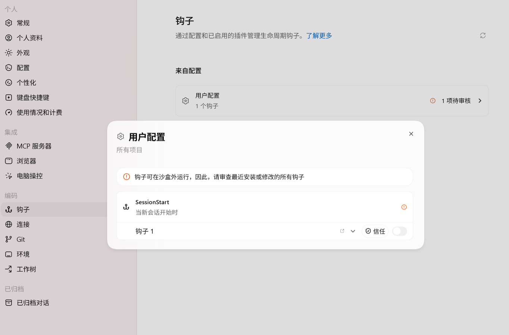

18 进阶与团队
Hooks
Hooks 是 Codex 的生命周期扩展机制，允许在固定时机运行外部脚本，例如用户提交提示词、工具调用前后、上下文压缩前后，或一次 turn 即将结束时。它适合执行确定性的自动检查，不适合替代 Codex 本身的推理，可以将其视为在 ag
来源：CodexGuide 原文。原页面标注 MIT Licensed；原图与说明按页面内容保留。
Hooks
Hooks 是 Codex 的生命周期扩展机制，允许在固定时机运行外部脚本，例如用户提交提示词、工具调用前后、上下文压缩前后，或一次 turn 即将结束时。它适合执行确定性的自动检查，不适合替代 Codex 本身的推理，可以将其视为在 agent 工作流旁运行的轻量 guardrail 脚本。
需要注意，Hooks是非常进阶的用法，一般推荐通过社区获取推荐的Hooks。也可以使用 Codex 撰写。
Hooks常见用途包括：
- 把对话或工具调用记录发送到团队日志系统。
- 检查用户提示词里是否误贴了 API key、token 或私密信息。
- 在会话开始时加载本地说明、项目约定或临时上下文。
- 在工具调用前拦截高风险命令，例如删除文件、发布、部署、数据库迁移。
- 在工具调用后检查输出，提醒 Codex 继续验证或修正。
- 在对话停止前要求 Codex 再跑一次测试、补充总结或生成交付说明。
Hooks 的优势在于确定性：脚本怎么写，就怎么执行。其边界也在于此：脚本本身必须安全、可审查、可维护。
默认开启
Codex 默认启用 Hooks。如果想在本机关闭，可以在 config.toml 中写：
[features]
hooks = false
官方推荐使用 hooks 这个 feature key。旧的 codex_hooks 仍可用，但已弃用。
团队或企业管理员也可以通过 requirements.toml 强制关闭或管理 Hooks。普通个人用户通常只需要理解本机和项目里的配置。
配置位置
Codex 会在激活的配置层旁边查找 Hooks。常见位置有四个：
~/.codex/hooks.json
~/.codex/config.toml
<repo>/.codex/hooks.json
<repo>/.codex/config.toml
也就是说，Hooks 可以单独写在 hooks.json，也可以写在项目目录的.codex/config.toml 的 [hooks] 表。
如果多个位置都有匹配的 Hook，Codex 会全部加载。为避免混淆，同一层里建议二选一：要么用 hooks.json，要么用 config.toml 内联写法。
项目内的 Hooks 只有在项目 .codex/ 配置层被信任后才会加载。未信任项目里，Codex 仍会加载用户级或系统级 Hooks。
基本结构
Hooks 配置包含三层：
- 事件：什么时候触发，例如
SessionStart、PreToolUse、PostToolUse、Stop。 - matcher：匹配哪些场景，例如只匹配
Bash，或只匹配startup|resume。 - handler：真正执行的命令。
一个最小 hooks.json 可以这样写：
{
"hooks": {
"SessionStart": [
{
"matcher": "startup|resume",
"hooks": [
{
"type": "command",
"command": "python3 ~/.codex/hooks/session_start.py",
"statusMessage": "Loading session notes"
}
]
}
]
}
}
当前实际执行的 handler 类型是 type: "command"。prompt 和 agent 这类 handler 目前会被解析，但不会执行。
事件与触发
Hooks 绑定在 Codex 的固定生命周期节点上，而不是随机触发。
生命周期
一次典型对话的生命周期如下：
会话启动
-> SessionStart
用户提交提示词
-> UserPromptSubmit
Codex 准备调用工具
-> PreToolUse
如果工具需要额外权限
-> PermissionRequest
工具执行完成
-> PostToolUse
当前 turn 准备结束
-> Stop
如果中途发生上下文压缩，会触发 PreCompact 和 PostCompact。如果 Codex 启动子代理，会触发 SubagentStart 和 SubagentStop。
匹配规则
事件触发后，Codex 会检查这个事件下配置的 matcher。matcher 命中，才会启动对应 command handler。
例如：
{
"hooks": {
"PreToolUse": [
{
"matcher": "^Bash$",
"hooks": [
{
"type": "command",
"command": "python3 check_bash.py"
}
]
}
]
}
}
这段配置只会在 Codex 准备调用 Bash 工具前触发。调用 apply_patch、MCP 工具或其他工具时不会触发这个 handler。
并发与冲突
如果多个配置层里都有匹配 Hook，Codex 会全部运行。高优先级配置层不会覆盖低优先级 Hooks。
同一个事件下如果有多个 matching command hooks，它们会并发启动。因此，一个 Hook 不能靠“先运行”来阻止另一个匹配 Hook 启动。
这会带来两个实践要求：
- Hook 之间不要依赖固定顺序。
- 如果多个 Hook 都可能做决定，要按官方事件规则理解冲突处理。例如
PermissionRequest里任何一个deny都会优先。
事件能力
不同事件能改变 Codex 行为的程度不同：
| 事件 | 能否阻止或改变后续行为 |
|---|---|
PreToolUse |
可以拒绝部分工具调用，也可以给 Codex 补充上下文 |
PermissionRequest |
可以允许或拒绝权限请求 |
PostToolUse |
工具已经执行完，不能撤销副作用，只能改变 Codex 接下来看到的反馈 |
UserPromptSubmit |
可以阻止用户提示词提交，或补充上下文 |
Stop |
可以要求 Codex 继续一轮 |
SessionStart |
主要用于补充会话开始时的上下文 |
因此，想阻止危险命令，要用 PreToolUse；想审查执行结果，用 PostToolUse；想避免 Codex 过早结束，用 Stop。将 Hook 配置在错误的事件点，效果会不同。
作用范围
官方文档把事件分成不同作用范围：
- turn scope：围绕一轮用户请求触发，例如
PreToolUse、PermissionRequest、PostToolUse、UserPromptSubmit、Stop。 - thread scope：围绕会话启动触发，例如
SessionStart。 - subagent scope：围绕子代理启动和停止触发，例如
SubagentStart、SubagentStop。
入门时，建议先掌握 turn scope。因为最常用的场景通常就是检查提示词、拦截工具调用、检查工具输出，以及在结束前补验证。
常见事件
以下事件适合入门理解：
| 事件 | 触发时机 | 常见用途 |
|---|---|---|
SessionStart |
会话启动、恢复、清空或压缩后重新开始 | 加载本地上下文、提示项目约定 |
UserPromptSubmit |
用户提示词即将提交 | 检查敏感信息、提示用户补充复现步骤 |
PreToolUse |
Codex 调用工具前 | 拦截危险命令、提示生成物目录不能改 |
PermissionRequest |
Codex 准备请求权限时 | 自动允许低风险请求，拒绝高风险请求 |
PostToolUse |
工具调用完成后 | 检查命令输出、要求继续验证 |
PreCompact / PostCompact |
上下文压缩前后 | 保存摘要、补充压缩后的上下文 |
SubagentStart / SubagentStop |
子代理开始或停止 | 给子代理补充规则，要求子代理继续检查 |
Stop |
当前 turn 即将结束 | 要求 Codex 再跑测试、补总结或继续处理失败项 |
该表用于建立直观理解。真正写 Hook 时，要再看具体事件支持哪些输入字段、输出字段和决策格式。
matcher
matcher 是正则表达式字符串，用来过滤 Hook 什么时候触发。
常见写法：
Bash
^apply_patch$
Edit|Write
mcp__filesystem__.*
startup|resume|clear|compact
manual|auto
不同事件的 matcher 含义不同：
PreToolUse、PermissionRequest、PostToolUse：匹配工具名，例如Bash、apply_patch、MCP tool name。SessionStart：匹配启动来源，例如startup、resume、clear、compact。PreCompact、PostCompact：匹配压缩触发方式，例如manual或auto。UserPromptSubmit和Stop：目前不使用 matcher，配置了也会被忽略。
输入输出
每个 command Hook 都会从 stdin 收到一个 JSON 对象。常见字段如下：
| 字段 | 含义 |
|---|---|
session_id |
当前 Codex 会话 id |
transcript_path |
会话 transcript 路径，可能为空 |
cwd |
当前工作目录 |
hook_event_name |
当前 Hook 事件名 |
model |
当前模型 slug |
permission_mode |
当前权限模式，部分事件会提供 |
Hook 可以通过退出码和 stdout / stderr 影响 Codex。主要分为两类：
- 正常退出并输出 JSON：给 Codex 补充上下文、拦截工具、要求继续。
- exit code
2并写入stderr：表示阻止或反馈原因，具体效果取决于事件。
不要将 transcript 视为稳定 API。官方说明它只是方便读取的会话记录，格式未来可能变化。
事件示例
拦截工具调用
PreToolUse 可以拦截 Bash、apply_patch 和 MCP 工具调用。例如，阻止危险命令时，可以让脚本返回：
{
"hookSpecificOutput": {
"hookEventName": "PreToolUse",
"permissionDecision": "deny",
"permissionDecisionReason": "Destructive command blocked by hook."
}
}
也可以用旧格式：
{
"decision": "block",
"reason": "Destructive command blocked by hook."
}
需要明确边界：PreToolUse 是 guardrail，不是完整安全边界。官方说明它目前不会拦截所有 shell 调用，也不会拦截 WebSearch 等非 shell、非 MCP 工具。真正高风险的项目，仍然要依赖沙盒、审批、权限策略和人工 review。
处理权限请求
PermissionRequest 会在 Codex 准备请求权限时触发，例如 shell escalation 或 managed-network approval。
允许请求：
{
"hookSpecificOutput": {
"hookEventName": "PermissionRequest",
"decision": {
"behavior": "allow"
}
}
}
拒绝请求：
{
"hookSpecificOutput": {
"hookEventName": "PermissionRequest",
"decision": {
"behavior": "deny",
"message": "Blocked by repository policy."
}
}
}
如果多个 Hook 同时匹配，只要有一个返回 deny，就会拒绝。否则，只要有一个返回 allow，Codex 就可以跳过普通审批提示。没有 Hook 做决定时，继续走正常审批流程。
Stop 事件
Stop 在当前 turn 即将结束时触发。它常用于避免 Codex 过早结束的场景，例如测试失败、还有未完成检查、交付说明缺验证结果。
如果 Stop Hook 返回：
{
"decision": "block",
"reason": "Run one more pass over the failing tests."
}
这不是拒绝本轮结果，而是告诉 Codex 继续一轮，并把 reason 作为新的继续提示词。
审查与信任

非托管 command Hook 在运行前需要被审查和信任。Codex 会根据 Hook 当前定义计算 hash；Hook 修改后，会重新进入待审查状态，在信任前会被跳过。
CLI 里可以用：
/hooks
查看 Hook 来源、审查新增或变化的 Hook、信任 Hook，或者禁用单个非托管 Hook。
一次性自动化场景下，如果你已经在 Codex 外部审查过 Hook 来源，可以使用：
codex --dangerously-bypass-hook-trust ...
该参数名中的 dangerously 已表明其风险：它会绕过持久化 Hook 信任检查，不适合日常使用。
平台差异
Hook 命令默认与平台相关。需要兼容 Windows 时，可以给 command handler 增加 Windows 专用命令：
{
"type": "command",
"command": "python3 /repo/.codex/hooks/check.py",
"commandWindows": "py -3 C:\\repo\\.codex\\hooks\\check.py",
"timeout": 30
}
在 TOML 里可以写 command_windows 或 commandWindows。
对于 repo-local Hooks，官方建议从 Git root 解析脚本路径，不要依赖 .codex/hooks/... 这种相对路径。因为 Codex 可能从子目录启动，相对路径容易出错。
使用建议
适合场景
- 检查提示词或命令里是否包含密钥。
- 阻止明显危险的 shell 命令。
- 自动加载本地上下文或项目规则。
- 在 turn 结束前检查是否遗漏测试。
- 团队统一记录 Codex 使用日志。
不适合场景
- 把大量业务逻辑塞进 Hook。
- 用 Hook 替代测试、CI、权限审批和代码 review。
- 在 Hook 里自动执行发布、部署、数据库迁移。
- 运行不可审查的远程脚本。
- 依赖 transcript 私有格式做长期稳定集成。
安全建议
- Hook 脚本要短、小、可审查。
- 使用绝对路径或基于 Git root 的路径。
- 不在 Hook 配置中写入 token、密码或私有凭据。
- 不从网络下载脚本后直接执行。
- 对删除、部署、迁移、权限放宽这类动作，优先通过 Hook 拒绝或要求人工确认。
- 团队项目里的
.codex/hooks.json应该进入代码 review。 - 引入社区 Hook 工具前，先检查它会写哪些文件、执行哪些命令、是否修改
~/.codex/hooks.json。
示例：阻止危险 Bash
以下是一个教学示例。
.codex/hooks.json：
{
"hooks": {
"PreToolUse": [
{
"matcher": "^Bash$",
"hooks": [
{
"type": "command",
"command": "python3 \"$(git rev-parse --show-toplevel)/.codex/hooks/block_dangerous_bash.py\"",
"commandWindows": "py -3 \"%CD%\\.codex\\hooks\\block_dangerous_bash.py\"",
"timeout": 10,
"statusMessage": "Checking Bash command"
}
]
}
]
}
}
对应的 .codex/hooks/block_dangerous_bash.py 可以这样写：
import json
import re
import sys
def main() -> int:
payload = json.load(sys.stdin)
tool_input = payload.get("tool_input") or {}
command = tool_input.get("command") or ""
dangerous_patterns = [
r"\brm\s+-rf\b",
r"\brm\s+-fr\b",
r"\bRemove-Item\b.*\s-Recurse\b.*\s-Force\b",
r"\brd\s+/s\b",
r"\brmdir\s+/s\b",
]
if any(re.search(pattern, command, re.IGNORECASE) for pattern in dangerous_patterns):
print(
json.dumps(
{
"hookSpecificOutput": {
"hookEventName": "PreToolUse",
"permissionDecision": "deny",
"permissionDecisionReason": "Blocked destructive delete command. Ask the user for explicit confirmation first.",
}
}
)
)
return 0
return 0
if __name__ == "__main__":
raise SystemExit(main())
该示例仅做一件事：发现类似 rm -rf、Remove-Item -Recurse -Force、rmdir /s 的删除命令时拒绝执行。实际项目中可继续添加团队自己的规则，例如禁止删除 data/、uploads/、数据库目录或构建缓存之外的目录。
❗ 示例边界 这个脚本只是教学示例。正则匹配不能覆盖所有危险命令，也不能替代沙盒、审批和人工确认。删除文件仍然建议在
AGENTS.md里写清楚“必须先征得用户明确允许”。
与 AGENTS.md 配合
AGENTS.md 写规则，Hooks 执行规则。
例如：
AGENTS.md写：“不要修改构建产物目录。”PreToolUseHook 检查命令是否触碰dist/。PostToolUseHook 检查输出是否提示测试失败。StopHook 在缺少验证结果时要求 Codex 继续补充。
因此，两者适合配合使用：AGENTS.md 负责让 Codex 理解项目约定，Hooks 负责把一部分明确规则变成可执行检查。
💡 最后核对 本文依据 Codex Hooks 官方文档 和 Codex Configuration Reference 整理。最后核对日期：2026-06-19。